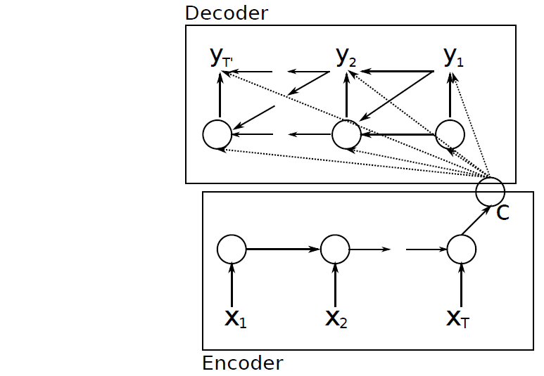
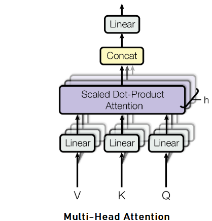
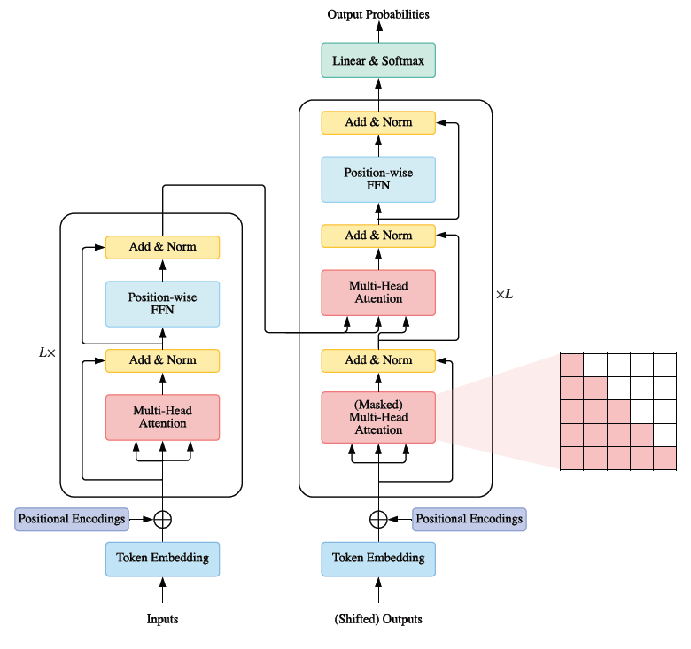

Date: 14th July 2022
Encoder-Decoder architecture is based on Recurrent Neural Network(RNN). In RNN, we have a hidden state `h` which takes a variable length sequence `X = (x_(1),x_(2),...x_(T))` to generate output `y`. At any time step `t`, hidden state `h_(t)` is updated by :
`h_(t) = f(h_(t-1),x_(t))` ..eq(1)
where `f` is a non-linear activation function. It can be element-wise sigmoid function or LSTM. Output at eah time step is the conditional distribution `p(x_(t) | x_(t-1),....x_(1))`
In Encoder-Decoder, we have a RNN encoder that encodes a variable-length sequence into a fixed-length vector, and a RNN decoder that decodes fixed-length vector back to variable-length sequence. Mathematically, it is a method to learn the conditional distribution over a variable-length sequence conditioned on yet another variable-length sequence e.g, `P(y_(1),y_(2),....,y_(T') | x_(1),x_(2),....,x_(T))`, where importantly, input sequence `T` and output sequence `T'` could vary. After reading each input at all time steps, hidden state of encoder RNN is a summary `C` of whole input sequence as shown in image below :

RNN Encoder-Decoder Architecture
Next decoder generate the output sequence by predicting the next symbol `y_(t)`. Here, in RNN decoder both `y_(t)` and `h_(t)` is conditioined on `y_(t-1)` and summary (or context vector) `C`. Thus, hidden state of decoder can be computed by :
`h_(t) = f(h_(t-1), y_(t-1),C)` ...eq(2)
Decoder defines a probability over the translation `y` by decomposing the joint probability into the ordered conditional :
`P(y) = Π_{t=1}^T p(y_(t) | {y_(1),....,y_(t-1)},c)`
and the conditional distribution of the next symbol is (if `g` represents activation such as soft-max) :
`P(y_(t) | y_(t-1),y_(t-2),.....,y_(1),C) = g(h_(t),y_(t-1),C)` ....eq(3)
This model of RNN Encoder-Decoder then jointly trained to maximize the conditional log-likelyhood
`max_{θ}\frac{1}{N}\sum_{n=1}^Nlog p_(θ)(y_(n) | X_(n))`
where θ is the set of the model parameters and each `(x_(n),y_(n))` is an (input sequence, output sequence) pair from training set.
(Cho et al., 2014b) prposed to use LSTM (paper says it is LSTM but it is GRU, for having reset and update gates) in hidden state. When reset gate is close to `0`, hidden state is forced to ignore previous hidden state and continue with current input. This effectively allows the hidden state to drop any irrelevant information. Update gate, on the other hand, controls how much information from the previous hidden state get to pass on to next hidden state. Combination of these two gates, thus, allows more compact and improved representation of output sequence.
(Sutskever et al., 2014), however, proposed three changes :
1. Two LSTM to be used - one for encoder, another for decoder.
2. Deep LSTM should be used. LSTM with four layers is implemented.
3. To reverse the order of input sequence. For instance, instead of mapping the input sequence `a,b,c` to `α,β,γ` it asked to map `c,b,a` to `α,β,γ`
Bahdanau model is based on RNN Encoder-Decoder that learns to align and translate simultaneously. This model also uses BiDirectional RNN (BiRNN) for Encoder.
BiRNN Encoder consists of forward and backward RNN. The forward RNN `\vecf` reads the input sequence in order (from `x_(1)` to `x_(T)`) and provides forward hidden states i.e, `\vech_(1),....,\vech_(T)`.
The backward RNN `f` reads sequence in reverse (from `x_(T),..,x_(1))` providing sequence of backward hidden states `h_(1)^←,....,h_(T)^←`
This way we obtain the annotation for each word `x_(j)` by concatenating the forward hidden and backwards hidden states i.e, `h_(j) = [\vech_(j);h_(j)^←]^T`(Bahdanau et al., 2014)
Each annotations `h_(i)` obtained this way contains information about the whole input sequence with a strong focus on the parts surrounding the `i-th` word of the input sequence.
The context vector `c_(i)` is then computed as a weighted sum of these annotations `h_(i)` as :
`c_(i) = \sum_{j=1}^(T_(x)) α_(ij)h_(j)`
and, the weight of each annotation `h_(j)` is computed as :
`α_(ij) = \frac{exp(e_(ij))}{\sum_{k=1}^(T_(x))(exp(e_(ik)))}`
where, `e_(ij) = a(s_(i-1),h_(j))` is an alignment mode which scores how well the inputs around position `j` and the ouput at position `i` match. Now, the Decoder part - Bahdanau model Decoder, in comparison with eq(3) define each conditional probability as :
`p(y_(i) | y_(1),...,y_(i-1),X) = g(y_(i-1),s_(i),c_(i))`
where `s_(i)` is an RNN hidden state for time `i` computed by :
`s_(i) = f(s_(i-1),y_(i-1),c_(i))`
This way Bahdanau model achieve significantly improved translation in comparison with conventional Encoder-Decoder, and especially in the cases of longer sentences.
Transformers architecture is based on Encoder-Decoder, but uses Attention Mechanism. Lets first discuss Attention Mechanism and key things in it.
Like visual world, Attention Mechanism is two component framework, here :
volitional cues → queries
nonvolitional cues → keys
Interaction between queries and keys results Attention Pooling, and based on kind of it, we aggregate values(sensory inputs) to generate output.
Non-parametric Attention Pooling
Given a input-output pair `{(x_(1),y_(1)),...,(x_(n),y_(n))}` if we have to find `f(x)` for new input `x_(n+1)`, then with Nadaraya-Watson Kernel Regression, it can be computed by (if `K` is kernel):
`f(x) = \sum_{i=1}^n\frac{K(x-x_(i))}{\sum_(j=1)^n K(x-x_(j))}y_(i)` .....eq(4)
This can be further simplified as :
`f(x) = \sum_{i=1}^nα(x,x_(i))y_(i)`
Here, `x` is query and `(x_(i),y_(i))` is key-value pair. Eq(4) is Attention Pooling that provides wegihted avergae of output `y_(i)` by Attention Weight→ `α(x,x_(i))`
To get better intuition on Attention Pooling, lets plugin Gaussian kernel in above equation :
`f(x) = \sum_{i=1}^nα(x,x_(i))y_(i)`
`=\sum_{i=1}^n \frac{exp(-\frac{1}{2}(x-x_(i))^2)}{\sum_(j=1)^n exp(-\frac{1}{2}(x-x_(j))^2)}y_(i)`
`=\sum_{i=1}^n`softmax`(-\frac{1}{2}(x-x_(i))^2)y_(i)`
This is non-parametric Attention Pooling, we can see that a key `x_(i)` closer to query `x` will be given more attention with large attention weight.
Parametric Attention Pooling
Parametric method is just slightly different from the non-parametric. Here, the distance between the query `x` and key `x_(i)` is multiplied by a learnable parameter `w`. Thus, `f(x)` can be expressed as :
`f(x) = \sum_{i=1}^n`softmax `(-\frac{1}{2}((x-x_(i))w)^2)y_(i)`
Attention Scoring Function
Exponent of Gaussian Kernel is said to be Attention Scoring Function. In any type of attention pooling, it maps two vectors to scalar, and when computed by softmax operation, it provides attention weight for the query `x` and key `x_(i)`
If we have a query `q` and `n` key-value pairs `(k_(1),v_(1),...,(k_(n),v_(n)))`, then attention pooling is computed as:
`f(q(k_(1),v_(1)),...,(k_(n),v_(n))) = \sum_{i=1}^n α(q,k_(i))v_(i)∈ℝ^v`
where attention weight is computed as :
`α(q,k_(i)) =`softmax`(a(q,k_(i))) = \frac{exp(a(q,k_(i)))}{\sum_(j=1)^n exp(a(q,k_(j)))} ∈ℝ`
We can observe that different value of attention scoring function →a can lead to different attention weight, and thus different output for attention pooling. Two popular attention scoring function are :
Additive Attention
Additive Attention is used as scoring function when queries and keys are vectors of different lengthhs. If we have query `q∈ℝ^q` and a key `k∈ℝ^k`, the additive attention is expressed as :
`a(q,k) = w_(v)^T tanh(W_(q)q + W_(k)k)∈ℝ`
where learnable parameters `W_(q) ∈ℝ^(h×q)`, `W_(k) ∈ℝ^(h×k)` and `w_(v) ∈ℝ^h`. Here, `h` is hidden units number
Scaled Dot-Product Attention
Dot-product is used when we have both the query and key of similar vector length `d`. It is further scaled up so that the variance of dot product still remain one by dividing with `\sqrtd`. Scaled Dot-Product Attention scoring function is then :
`a(q,k) = q^Tk // \sqrtd`
If we have value as `V` , the attention weight thereafter can be written as :
softmax`(\frac{QK^T}{\sqrtd})V`
Multi-Head Attention
Multi-Head Attention allows the attention function to extract information from different representations. It linearly projects the queries, keys and values `h` time, each time using a different learned projection to `d_(k)`,`d_(k)` and `d_(v)` dimensions.
Then, on each of these projects, we implement Scaled Dot-Product Attention function to gain `d_(v)` dimension output. These, afterwards gets concatenated and projected again to provide final result. It can be expressed as :
MultiHead`(Q,K,V) = concat(head_(1),....,head_(h))W^o`
where `head_(i) = `Attention`(QW_(i)^Q,KW_(i)^K,VW_(i)^V)`
here, the projections are parameter matrices `W_(i)^Q∈ℝ^(d_(model)×d_(k)), W_(i)^K∈ℝ^(d_(model)×d_(k)),W_(i)^V∈ℝ^(d_(model)×d_(k))`, and `W^o∈ℝ^(hd_(v)×d_(model))`
Transformers consists of an Encoder-Decoder pair, where each of them is a stack of `L` identical blocks. Encoder block is composed of Multi-Head attention and a position-wise feed-forward network (FFN). In addition, a residual connection, followed by Layer Normalization around each module. Decoder block, on the other hand, additionally include cross-attention modules between Multi-Head attention and position-wise FFNs. Transformers architecture can be seen below :
There are three types of attentions used here in Transformers :
Self-Attention → It is when queries, keys, and values are generated from the same sequence.
Cross-Attention → It is between encoder and decoder, and opposite of self-attention. Here, keys and values are generated by a different sequence than queries.
Masked Multi-Head Attention → In transformer decoder side, we apply a mask function to the unnormalized attention matrix `\hatA = exp|frac{QK^T}{\sqrtD_(k)}`, where the illegal positions are masked out by setting `\hatA_(ij) =-∞` if `i≤j`
Position-Wise FFN : The position-wise FFN is a fully connected feed-forward module that operates separately and identically on each position
`FFN(H') = ReLU(H'W^1 +b^1)W^2 +b^2 `
Position Encoding :Since Transformers do not have recurrence or convolution, it doesn't really know the which word is at which position. Therefore, position needs to be encoded. One way is to append sine and cosine waves with different frequencies with word vector. This helps transformer to learn the word position because each position have unique combination of values.
References :
[1] Cho, K., Van Merriënboer, B., Gulcehre, C., Bahdanau, D., Bougares, F., Schwenk, H. and Bengio, Y., 2014. Learning phrase representations using RNN encoder-decoder for statistical machine translation. arXiv preprint arXiv:1406.1078.